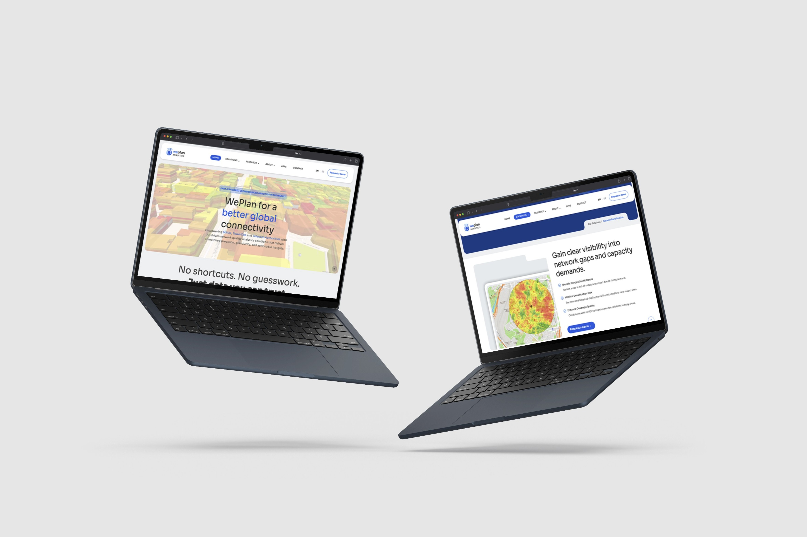
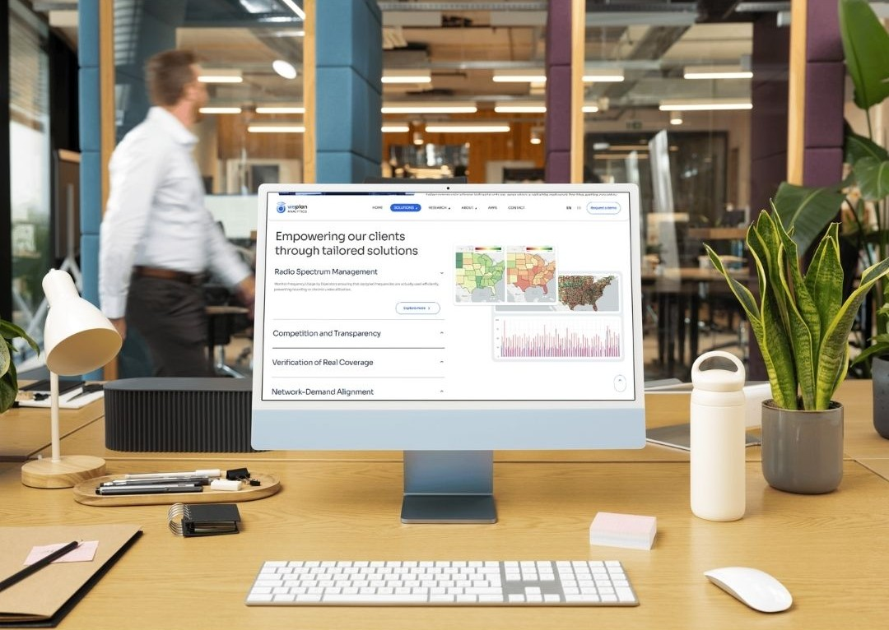
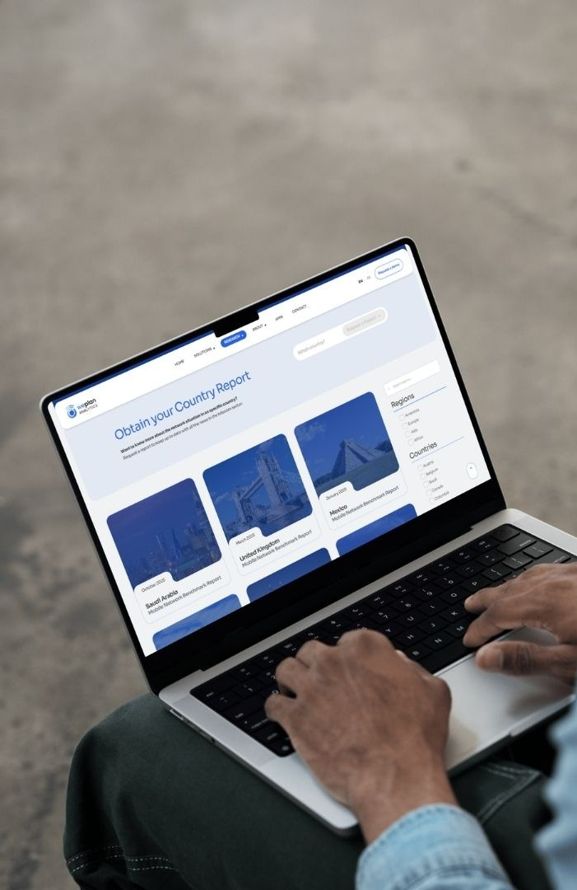

Proyecto UX UI
WePlan Analytics
Rediseño completo de la web corporativa: nueva arquitectura, narrativa de marca y experiencia visual de empresa SaaS que convierte datos complejos en decisiones claras en el sector telco.

Objetivo del proyecto
- ○Renovar la identidad digital para reflejar el valor real del software.
- ○Redefinir la arquitectura y la narrativa para una comprensión inmediata.
- ○Alinear el diseño con la nueva identidad corporativa de WePlan.
- ○Mejorar los KPIs de retención, navegación y conversión.
El proceso de diseño
La web existente no transmitía quién era la empresa. La estética estaba desactualizada, la narrativa era poco clara y la interacción, mínima. El reto no era solo actualizar colores o tipografía: había que replantearse toda la experiencia digital desde cero.
Estudié la web existente y referentes del sector para identificar los puntos de fricción: falta de claridad en la propuesta de valor, una estructura rígida que no guiaba al usuario y una estética que no transmitía innovación. Este diagnóstico definió toda la estrategia posterior.
Diseñé una arquitectura de contenidos que funciona como un recorrido natural: explicar qué hace la empresa, mostrar visualmente cómo funciona el software y conducir al usuario hacia el contacto o la demo. También definí todos los textos de la web, desde los titulares hasta los microcopys de interacción.
De los wireframes estructurales a los mockups definitivos: jerarquía de información, navegación y puntos de interacción alineados con la nueva identidad corporativa. Colores, tipografías y secciones modulares pensadas para una lectura rápida y sin fricción.
Diseño UX/UI
La nueva web traduce la complejidad del software en una experiencia que cualquier visitante puede entender en segundos, guiándole de forma natural hacia la acción. Visitar web ↗
- Diagrama de flujo y wireframes de baja fidelidad.
- Mockups de alta fidelidad alineados con la identidad corporativa.
- Secciones modulares para una lectura rápida y progresiva.
- Llamadas a la acción estratégicamente posicionadas.


Diseño que llega a producción
Trabajé codo a codo con el equipo de desarrollo para garantizar que la implementación mantuviera la misma fluidez que los prototipos y con el equipo de negocio para que la narrativa mantuviese un mismo foco.
Un buen diseño no termina en el prototipo: termina cuando el usuario lo experimenta.
Una web que comunica, convierte y representa.
El rediseño no fue solo una actualización estética: transformó la web en un canal de comunicación estratégico. Más visual, más sintética y completamente alineada con la identidad de WePlan Analytics.

Siguiente proyecto